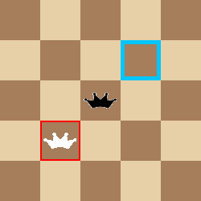

Skákání obyčejného kamene |
Skákání:
- Zajímání soupeřových kamenů (obyčejných i dam) se provádí skákáním jako v klasické dámě, a to ve všech směrech (ortogonálně i diagonálně). Při ortogonálním skoku se ignorují světlá pole, skáče se tedy vlastně o 4 pole (na druhém musí být soupeřova figurka a poslendí pole musí být volné)
- Obyčejný kámen smí přeskočit soupeřův kýmen, který se nachází na sousedním poli, a dopadnout na volné pole bezprostředně za přeskočeným kamenem. Přeskočený kámen je odstraněn z desky.
|